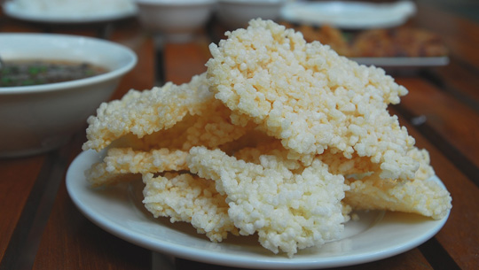
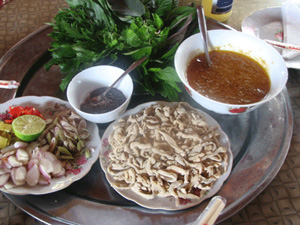
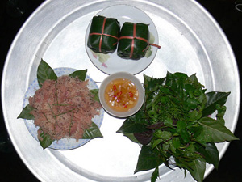
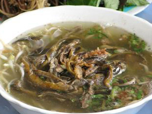

Những món ngon không thể bỏ qua khi tới Ninh Bình
Ẩm thực Ninh Bình
Ngoài những di tích lịch sử có giá trị, phong cảnh thiên nhiên hữu tình, mảnh đất Ninh Bình còn thu hút du khách bởi những món ăn độc đáo, ngon miệng mà đậm nét dân dã Bắc Bộ. Nếu có dịp đến với Ninh Bình, bạn nhớ nếm thử các đặc sản nổi tiếng sau nhé!
1. Cơm cháy
Cơm cháy Ninh Bình là một trong những đặc sản ẩm thực nổi tiếng nhất của Ninh Bình. Địa bàn phát triển loại hình ẩm thực này chủ yếu là ở ven đường Quốc lộ 1, thành phố Ninh Bình và các khu du lịch. Cơm cháy Ninh Bình khác với các vùng khác từ cách chiên cho đến nước sốt đi kèm. Cơm cháy ngon có màu vàng nhạt, đều hạt, giòn mà vẫn dẻo, vị bùi, béo mà không ngán.

2. Gỏi cá nhệch, Kim Sơn
Trong tỉnh Ninh Bình có nhiều nơi giới thiệu món ăn này, nhưng gỏi cá nhệch ở Kim Sơn được coi là ngon nhất. Để chế biến ra món ăn đặc sắc gỏi cá Nhệch này cần một chuỗi nhiều khâu hết sức kì công. Món ăn này mang hương thơm bùi bùi của gạo nếp rang, vị chua thanh thanh của dấm xen vào cái vị cay ấm của gừng với tỏi, ớt, tiêu, sả. Gỏi cá nhệch thơm và bùi, có mùi vị rất đặc trưng, ăn một lần là nhớ mãi không quên.

3. Tái dê Hoa Lư
Bên cạnh tái dê, từ thịt dê núi người Hoa Lư - Ninh Bình còn chế biến nhiều món khác như: nem dê, dê hấp, nhựa mận, dê nướng, tiết canh dê, mật, cà đem ngâm rượu, nhưng món tái dê vẫn đứng nhất bảng. Cái ngon của tái dê ngoài bí quyết chế biến khéo léo còn ở gia vị, gia giảm. Đó là các loại lá, quả ăn kèm theo và đặc biệt là món tương gừng. Tái dê vừa là món ăn ngon dùng bồi dưỡng cơ thể, vừa là bài thuốc chữa bệnh bởi lẽ dê ăn nhiều loại lá, có chứa dược liệu rất quý.

4. Nem Yên Mạc
Nem Yên Mạc được truyền lại từ đời nào không rõ, nhưng những người sành ăn ở đây đã biết đến từ lâu. Ngày nay, nem Yên Mạc đã vươn xa, có mặt ở nhiều khách sạn, nhà hàng cả trong và ngoài tỉnh. Nem Yên Mạc do được tinh chế khá công phu, sợi nem nhỏ, đỏ hồng, rời, tươi ướp với gia vị và lá ổi tàu để được hàng tuần. Nem Yên Mạc phải ăn kèm với chút lá ổi, lá sung, cùng rau thơm cuộn lại, chấm với nước mắm chanh, cho thêm một ít ớt, tỏi và hạt tiêu. Như vậy người ăn mới cảm nhận đủ vị ngọt, cay của hương vị đặc biệt của món ăn này.

5. Miến lươn
Cùng với cơm cháy, tái dê, miến lươn cũng là món đặc sản nổi tiếng ở Ninh Bình. Bạn có thể thưởng thức món ăn này tại 3 nhà hàng gần nhau ở ngã tư đường Trần Hưng Đạo, thành phố Ninh Bình, một ngả ra chợ Rồng, một ngả vào bệnh viện tỉnh. Hương thơm của món miến lươn lan toả ngọt ngào ra khắp một không gian rộng nơi đây như mời chào khiến du khách khó có thể bỏ qua mỗi khi có dịp tới Ninh Bình. Ngoài ra, du khách có thể thưởng thức thêm món bún mọc, cà niễng, rượu Lai Thành- Kim Sơn, mắm tép Gia Viễn, rượu cần Nho Quan…
